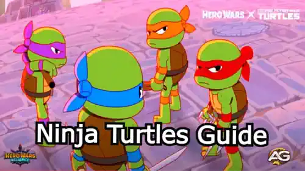
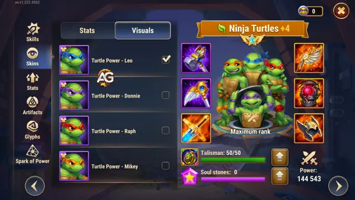
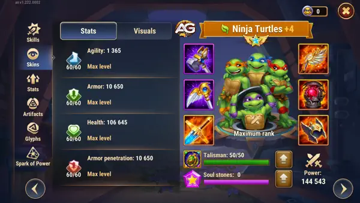
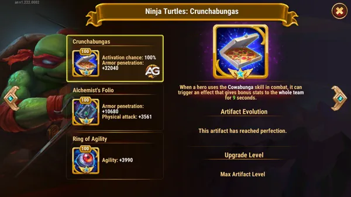

The arrival of the Ninja Turtles in Hero Wars Mobile has introduced an innovative and powerful mechanic to the game. These legendary heroes, tested extensively by expert player Alexandre Games, have already proven their worth as a top-tier addition to the roster.
Alexandre highlighted their immense power and strategic versatility, describing them as a hero that feels like having “2 to 3 extra characters fighting alongside you.” The synergy of the Ninja Turtles with Nature and Eternity faction heroes like Oya, Alvanor, Elmir, Dante, and Octavia creates formidable dodge-based teams capable of countering even the strongest meta setups.
The Turtles excel in adaptability, making them a revolutionary force. However, as with any hero, they come with a few challenges, such as losing Nebula’s Equilibrium buff during position swaps. Let’s dive deeper into their abilities, stats, and best team setups to maximize their potential.
Ninja Turtles Overview
The Ninja Turtles bring their unique Turtle Power to Hero Wars, blending offensive and defensive capabilities in a single hero. With a shared health pool, rotation-based combat mechanics, and the ability to disrupt enemies while supporting allies, the Turtles are a versatile choice for any battle scenario.

Illustration of Ninja Turtles characters from the game Hero Wars Alliance, developed by Nexters.
Ninja Turltes Main Stats in Hero Wars Alliance
Table: Ninja Turtles Main Stats
Stats
Value
Position
Front Line
Function
Warrior
Main Stat
Agility
Faction
Nature
How to get Soul Stones
Events
Ninja Turtles Max Stats Points
Table: Max Stats Points
Stat
Value
Intelligence
1,961
Agility
14,454
Strength
2,947
Health
414,631
Physical Attack
64,964
Magic Attack
6,124
Armor
58,457
Magic Defense
4,844
Armor Penetration
36,370
Ninja Turtles Tier List 2025
Table: Ninja Turtles Tier List 2025
Tier List
Rank
Hero Overall Tier List
S+
Hydra Tier List
B
Abilities of the Ninja Turtles
Cowabunga (Ultimate Skill)
Upon activation, the Ninja Turtles cleanse all control effects and disappear from the battlefield. Each Turtle re-enters the fight sequentially, executing their Signature Moves before returning to their original positions.
Leonardo’s Signature Move: Leonardo leaps into the enemy team, spinning his katanas and dealing 20,441 damage per second for 5 seconds. This is an excellent AoE attack to disrupt and weaken enemy formations.
Pro Tip: Use this ultimate early in the fight for maximum crowd control and damage. As the first ultimate is player-controlled in Hero Wars, timing is crucial for optimal results.
Every 10 seconds, a new Turtle appears and performs its Signature Move before leaving. The Turtles share a common health and energy pool, and their maximum health remains unchanged during battles.
Donatello’s Signature Move: Donatello strikes the nearest enemy, dealing 34,986 damage and stunning them for 1 second. He then pushes the enemy into their team, dealing knockback damage to other enemies in the path.
Synergy Tip: Donnie’s ability to stun and reposition enemies is particularly effective when paired with Nature faction heroes like Elmir, who benefits from disrupting enemy lines.
Enhances every third basic attack of each Turtle, increasing damage by 25% and stunning the target for 1 second.
Raphael’s Signature Move: Raphael leaps behind the farthest enemy, pushing them toward their team and dealing 28,489 damage. He then throws his sai at all enemies, dealing additional damage to each.
Battle Insight: Raphael’s ability to target backline enemies can neutralize key threats like mages or healers, making him a strategic asset in countering high-damage teams.
As long as more than one Turtle is on the battlefield, all Turtles take 25% less damage.
Michelangelo’s Signature Move: Mikey rides his skateboard through the enemy team, dealing 34,986 damage and scattering pizza slices to heal allies for 22,241 health.
Support Role: Mikey’s healing and damage reduction make the Turtles incredibly resilient, especially in prolonged battles. Pairing him with heroes like Oya or Thea can enhance their survivability further.
The Ninja Turtles come with four unique skins, one for each Turtle, providing key stat boosts. Upgrading these skins in the right order is essential to maximize their effectiveness in battles. Follow the priorities in the table below to ensure the Turtles have the survivability and damage output needed to excel in various scenarios.

Ninja Turtles Visuals, Hero Wars Alliance.
Skins Stats and Priority
Priority
Stat
Skin
Max Level Boost
1st
Health
Rapha
106,645
2nd
Armor Penetration
Mikey
10,650
3rd
Armor
Donnie
10,650
4th
Agility
Leo
1,365

Ninja Turtles Skins Max Level, Hero Wars Alliance.
Ninja Turtles Artifacts Priorities
1st - Crunchabungas: Provides 32,040 Armor Penetration, ensuring they can deal with heavily armored enemies.
3rd - Ring of Agility: Offers 3,990 Agility, enhancing their main stat.

Ninja Turtles with Max Level Artifacts, Hero Wars Alliance.
Talisman of Shell
The Talisman of Shell is a key item that amplifies the Ninja Turtles’ effectiveness:
Grants +2,000 Agility, boosting their primary stat for increased attack and defense.
Provides +6,600 Armor with three additional slots, which can be rerolled to maximize the bonus to +19,800 Armor.
Ninja Turtles with Talisman of Shell, Hero Wars Alliance.
Upgrade Tip: Max out the Talisman to level 50/50 for enhanced durability and physical attack, ensuring the Turtles remain a frontline powerhouse.
Best Team Compositions for Ninja Turtles
Nature Synergy Team
The Turtles shine when paired with Nature heroes who complement their abilities.
Alvanor: Alvanor activates the Earth Rune, which is always active, protecting Nature allies from basic attack damage and healing them over time. Additionally, Alvanor doubles the amount of healing received by Nature allies, regardless of the source, perfectly synergizing with Mikey's healing from his fourth skill.
Elmir: Elmir creates clones of himself, increasing the number of allies on the battlefield alongside the Turtles, while also providing additional armor penetration through his weapon artifact. He disrupts enemy lines and synergizes perfectly with Donnie’s knockback abilities, making them a formidable combination.
Eternity Synergy Team
Their synergy with Eternity heroes creates a dodge-based powerhouse.
Dante: A perfect fit for dodge teams, Dante provides massive damage and evasion bonuses.
Octavia: Octavia enhances the Dodge buff, while Dante provides Dodge to allies who do not have it in their base stats, creating excellent synergy with the Turtles.
Pro Tip: A well-built Nature/Eternity team with the Turtles can counter even the most powerful meta teams, thanks to their ability to avoid damage and disrupt enemy strategies.
Countering Meta Teams with Ninja Turtles
Against Nebula Teams
One limitation of the Turtles is their interaction with Nebula’s Equilibrium buff, which they lose during position swaps. To mitigate this:
Time their swaps carefully to maintain key buffs.
Pair them with heroes like Celeste, who can provide consistent healing and support regardless of position changes.
Against Amira
The Turtles excel against Amira, as their position-swapping mechanic allows them to escape her Golden Curse. Alexandre Games highlighted this as a significant advantage in meta battles.
Battle Strategy: Use their ultimate ability strategically to neutralize Amira’s curse and maintain pressure on her team.
Key Tips for Maximizing Ninja Turtles’ Potential
Master the Rotation: The sequential activation of each Turtle’s Signature Move is crucial for optimal damage and control. Time your abilities to disrupt enemy formations effectively.
Prioritize Artifacts: Upgrade Crunchabungas for armor penetration, ensuring they remain effective against tank-heavy teams.
Monitor Health Pool: Since all Turtles share the same health pool, be mindful of burst damage from enemies. Pair them with healing-centric heroes like Thea or Martha to sustain them in long battles.
First Ultimate Matters: Remember, only the first ultimate in Hero Wars is player-controlled. Use it wisely to set the tone of the battle.
FAQs
Are the Ninja Turtles good for all team setups?
While versatile, they perform best with dodge-based Eternity and Nature faction heroes. Their ability to disrupt and support makes them suitable for most scenarios.
How do the Ninja Turtles counter Amira?
Their position-swapping mechanic allows them to avoid Amira’s Golden Curse, giving them an edge against her team.
What artifacts should I prioritize for the Ninja Turtles?
Focus on Crunchabungas for armor penetration and Ring of Agility for agility boosts, ensuring their damage output and survivability remain high.
Do they work well with Nebula?
Yes, but they lose Nebula’s Equilibrium buff when swapping positions. Proper timing and team synergy are key to overcoming this limitation.
Who are their best allies?
Nature heroes like Oya, Alvanor, and Elmir, as well as Eternity heroes like Dante and Octavia, create powerful synergies with the Turtles.
Are they worth investing in?
Absolutely. Their versatility, team-oriented mechanics, and ability to counter meta teams make them a top-tier choice for players.
Conclusion
The Ninja Turtles are a game-changing addition to Hero Wars, offering unparalleled versatility and strength. With their unique mechanics, powerful abilities, and synergy with key factions, they’re a must-have for players seeking to dominate the Dominion. Whether you’re countering Amira, building dodge-based teams, or disrupting enemy formations, the Turtles provide a dynamic and rewarding gameplay experience.
Unleash the power of the Ninja Turtles and revolutionize your battles today!
Did you like our Ninja Turtles Guide? Is there something you didn't understand or would like to suggest changes to? We invite you to join our comment section on the Alexandre Games Blog page. Feel free to express your opinion, clarify your doubts, and share your suggestions. Click the button below to get started:

 Ninja Turtles Synergy Guide Hero Wars Alliance
Ninja Turtles Synergy Guide Hero Wars Alliance